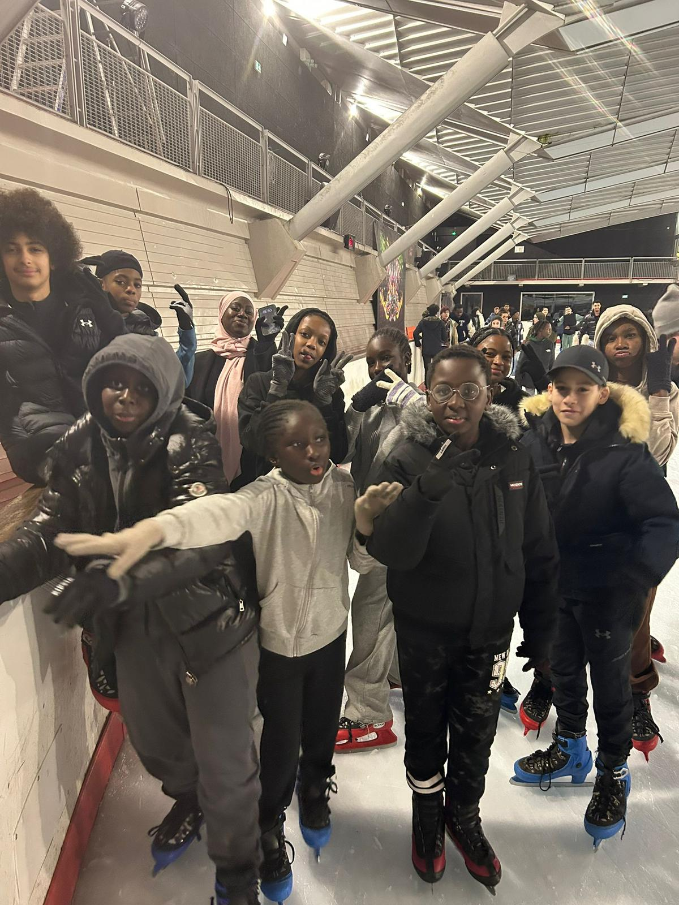
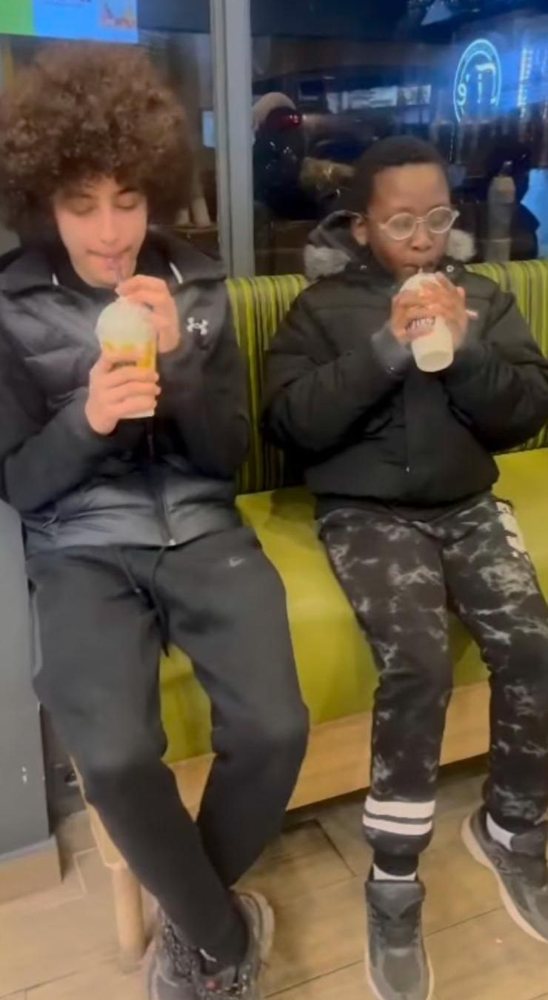
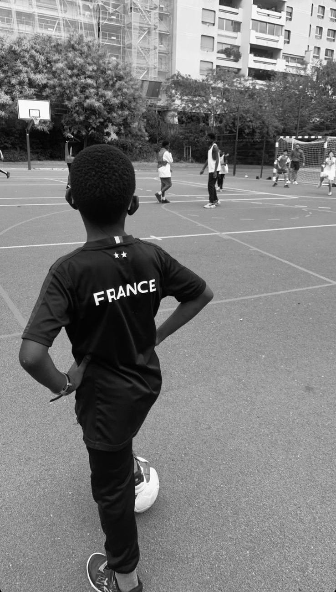

🌱 Pôle Jeunesse
“Éveiller, inspirer, responsabiliser”
Le pôle jeunesse est le cœur battant d’Oxyjeunes. Il a été pensé pour que chaque jeune du quartier de l’Amiral Roussin puisse se sentir écouté, valorisé et encouragé à se dépasser. Ce pôle, c’est un espace de découverte, de transmission et de confiance.
Nos actions principales
- Sorties éducatives et culturelles : musées, expos, sorties loisirs… pour ouvrir les horizons et créer des souvenirs positifs.
- Activités sportives : tournois, événements collectifs, pour transmettre les valeurs de dépassement, d’unité et de respect.
- Rencontres Talents Pro : des intervenants issus de différents parcours (sport, entrepreneuriat, art, santé…) viennent partager leur expérience et motiver les jeunes.
- Temps d’échange et de sensibilisation : discussions autour de l’orientation, la confiance en soi, les réseaux sociaux, ou encore la santé mentale.
- Accompagnement à la scolarité : mise en place de soutien scolaire, d’aides aux devoirs, et de coaching personnalisé pour encourager la réussite et lutter contre le décrochage.
En images



Nos objectifs
- Offrir des repères positifs et des outils concrets pour avancer.
- Éviter l’isolement et la perte de confiance chez les jeunes.
- Valoriser chaque parcours, chaque potentiel.
- Créer un cadre bienveillant et structurant, où chaque jeune peut apprendre à croire en lui-même.